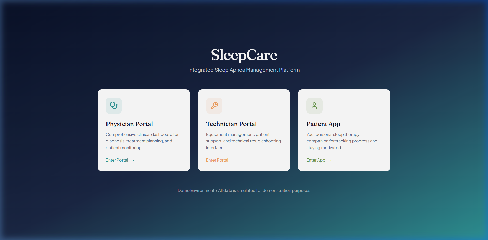
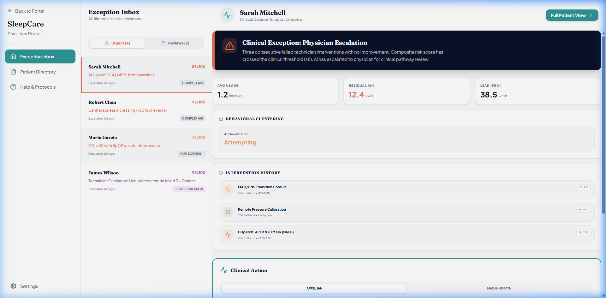
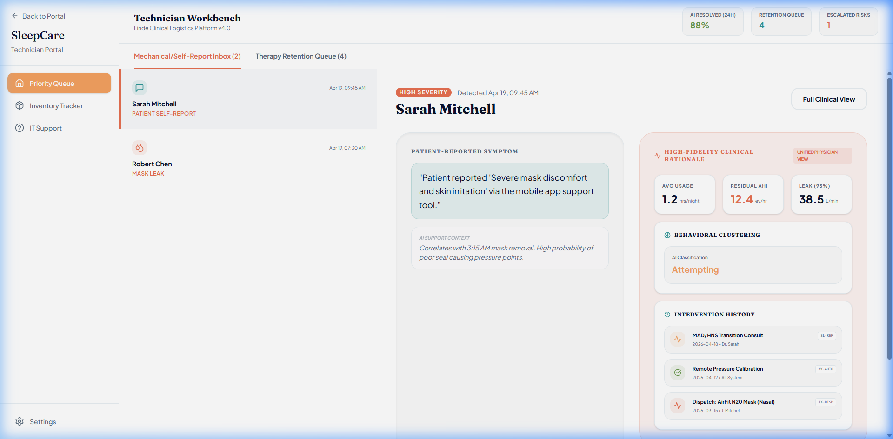
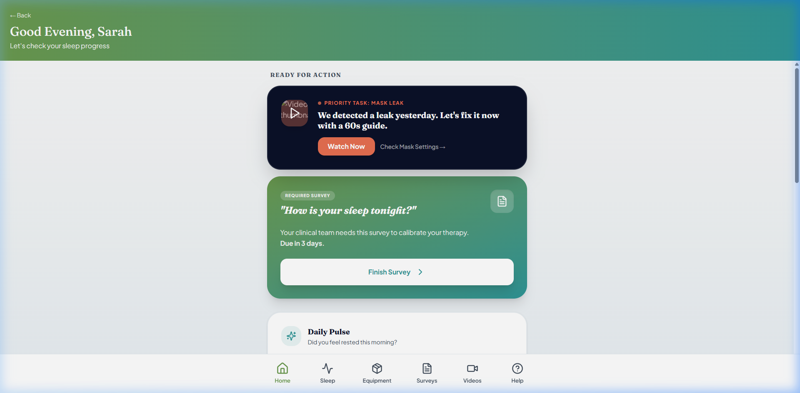

Student: Moeez Ahmed
Date: April 26, 2026
Internship Topic: SleepCare — Integrated Sleep Apnea Management Platform
Host Organization: DISP Lab (University of Lyon 2)
SleepCare is a digital health platform designed to improve therapy success for patients with Obstructive Sleep Apnea (OSA).
OSA is a condition where breathing stops during sleep, leading to serious health risks if untreated. While CPAP therapy is effective, many patients stop using it ("dropout") due to technical or comfort issues. SleepCare aims to solve this by:
I have completed the first phase of the internship and am preparing for the development phase.
flowchart LR
P[Patient]
T[Technician]
D[Physician]
A[AI Model]
subgraph PatUI [Patient Interface]
U1[View Progress]
U2[Complete Surveys]
U3[Submit Report]
end
subgraph TechUI [Technician Interface]
U4[Manage Queue]
U5[Log Dispatch]
end
subgraph DocUI [Physician Interface]
U6[Manage Inbox]
U7[Review Logs]
end
P --- PatUI
T --- TechUI
D --- DocUI
U3 --> U4
U3 --> A
A --> U6
sequenceDiagram
actor P as Physician
participant D as Dashboard
participant S as System
P->>D: Open Inbox
D->>S: Request critical patients
S-->>D: Return Alerts
D-->>P: Show Urgent Actions
P->>D: View Pathway Report
S-->>D: Load Data
D-->>P: Display Context
P->>D: Authorize Therapy
D->>S: Log Auth
S-->>D: Success
sequenceDiagram
actor T as Technician
participant D as Dashboard
participant S as System
T->>D: Open Queue
D->>S: Request tasks
S-->>D: Return patients
D-->>T: Show Actions
T->>D: Open Prep Card
S-->>D: Load Hardware
D-->>T: Display needs
T->>D: Log Dispatch
D->>S: Update record
sequenceDiagram
actor P as Patient
participant A as App
participant Q as Tech Queue
participant AI as AI Model
P->>A: Open App
A-->>P: Show Card
P->>A: Report issue
par Route to Tech
A->>Q: Trigger Alert
and Route to AI
A->>AI: Feed feedback
AI-->>AI: Update Score
end
A-->>P: Submitted



